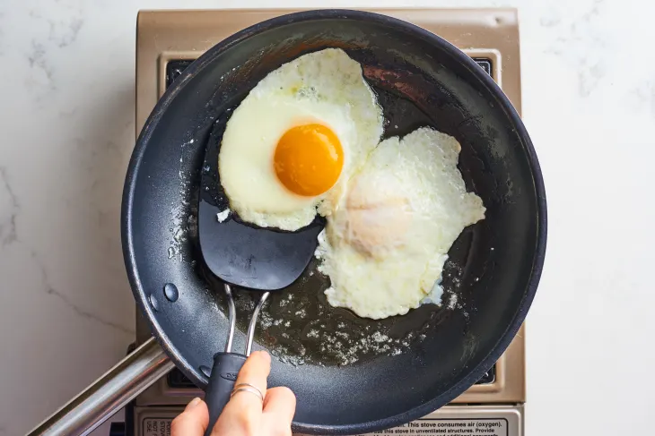

Home
Over Easy Eggs

Description
A simple over easy eggs recipe.
Ingredients
- 1 tablespoon unsalted butter
- 2 large eggs
- Kosher salt
- Freshly ground black pepper
Steps
- Melt the butter. Melt 1 tablespoon unsalted butter in a small nonstick frying pan over medium heat. Tilt the
pan so the butter films the bottom.
- Add 2 eggs and season with salt. Add 2 large eggs and season with kosher salt.
- Cook until the whites are almost set. Let the eggs cook undisturbed until the whites are almost completely
set and opaque except for the 1/2-inch area around the yolks, about 2 minutes.
- Carefully flip the eggs. Use the edge of a flat spatula to cut and separate the eggs if needed. Gently slide
the spatula under one of the eggs, making sure it is centered under the yolk, and carefully flip the egg.
Flip the second egg.
- Season the eggs with pepper and cook until the whites are set. Season the eggs with black pepper and cook
until the whites are completely set, about 30 seconds more. Gently slide the eggs onto a plate.